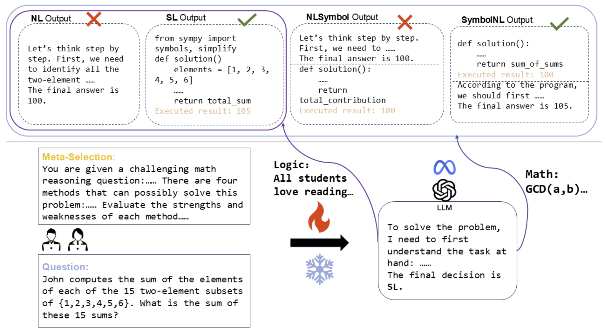
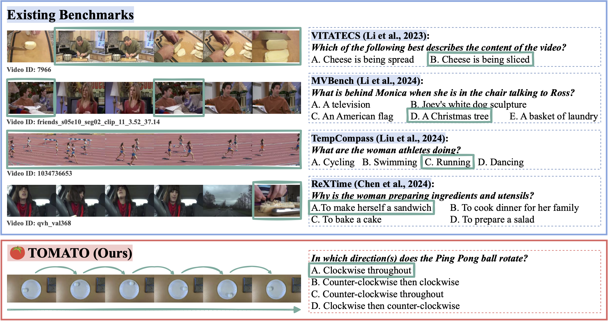
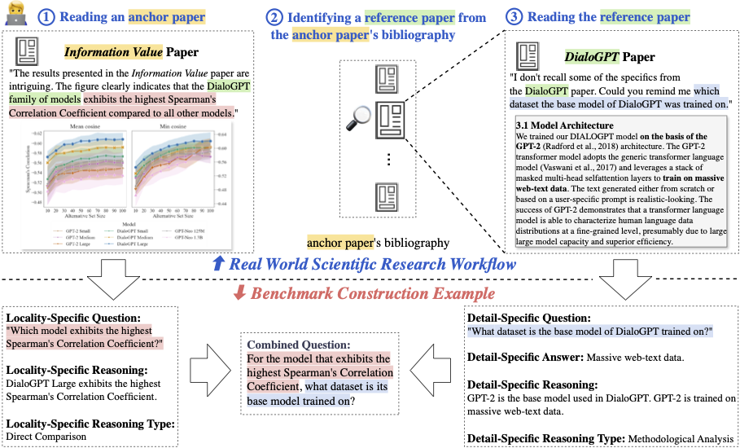

|
Department of Computer Science, UC Santa Barbara Email: chuhan_li [at] ucsb [dot] edu Office: 2113 Henley Hall |
|
I am a Ph.D. student in Computer Science at UC Santa Barbara, working with Xin (Eric) Wang. Before that, I earned an M.S. in Computer Science at Yale University, working with Arman Cohan and Rex Ying. Prior to that, I graduated Summa Cum Laude from Boston University with a B.A. in Computer Science and B.A. in Mathematics, where I worked with Evimaria Terzi.
My research goal is to develop intelligent systems that reason and interact with the physical world. My primary focus lies in machine learning, natural language processing, and computer vision, particularly in spatial intelligence, multimodal reasoning, and neuro-symbolic reasoning. My recent research interests include:
|
|  |
COLM 2025 The First Workshop on the Application of LLM Explainability to Reasoning and Planning Paper |
|  |
International Conference on Learning Representations (ICLR), 2025 Paper | Code | Dataset |
|  |
Chuhan Li*, Findings of the Association for Computational Linguistics: EMNLP 2024 Paper | Code | Dataset |
Workshop Organizer:
Workshop Reviewer: ICLR 2025 workshop on LLM Reason and Plan, ICLR 2025 workshop on SCI-FM, NeurIPS 2024 workshop on FM4Science |
|
|
Teaching Assistant, Natural Language Processing (CPSC 477/577), Spring 2025
Teaching Assistant, Deep Learning on Graph-Structured Data (CPSC 483/583), Fall 2024 Teaching Assistant, Introduction to Machine Learning (CPSC 381), Spring 2024 Teaching Assistant, Algorithms (CPSC 365), Fall 2023 |
|
Teaching Assistant, Combinatoric Structures (CS 131), Fall 2021, Spring 2022, Spring 2023
Teaching Assistant, Foundation of Data Science (CS 365), Fall 2022 |
|
Website design from Jon Barron, source code here. |